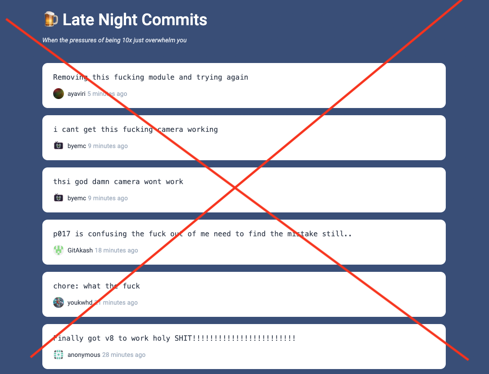
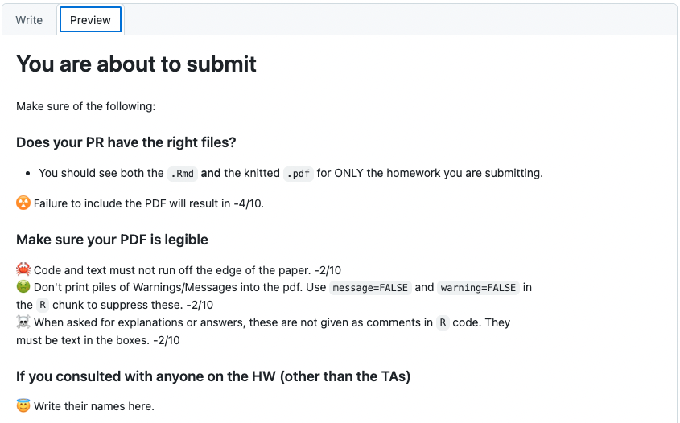

00 Git, Github, and Slack
Stat 406
Geoff Pleiss, Trevor Campbell
Last modified – 02 September 2024
\[ \DeclareMathOperator*{\argmin}{argmin} \DeclareMathOperator*{\argmax}{argmax} \DeclareMathOperator*{\minimize}{minimize} \DeclareMathOperator*{\maximize}{maximize} \DeclareMathOperator*{\find}{find} \DeclareMathOperator{\st}{subject\,\,to} \newcommand{\E}{E} \newcommand{\Expect}[1]{\E\left[ #1 \right]} \newcommand{\Var}[1]{\mathrm{Var}\left[ #1 \right]} \newcommand{\Cov}[2]{\mathrm{Cov}\left[#1,\ #2\right]} \newcommand{\given}{\ \vert\ } \newcommand{\X}{\mathbf{X}} \newcommand{\x}{\mathbf{x}} \newcommand{\y}{\mathbf{y}} \newcommand{\P}{\mathcal{P}} \newcommand{\R}{\mathbb{R}} \newcommand{\norm}[1]{\left\lVert #1 \right\rVert} \newcommand{\snorm}[1]{\lVert #1 \rVert} \newcommand{\tr}[1]{\mbox{tr}(#1)} \newcommand{\brt}{\widehat{\beta}^R_{s}} \newcommand{\brl}{\widehat{\beta}^R_{\lambda}} \newcommand{\bls}{\widehat{\beta}_{ols}} \newcommand{\blt}{\widehat{\beta}^L_{s}} \newcommand{\bll}{\widehat{\beta}^L_{\lambda}} \newcommand{\U}{\mathbf{U}} \newcommand{\D}{\mathbf{D}} \newcommand{\V}{\mathbf{V}} \]
Course communication
Website:
https://ubc-stat.github.io/stat-406/
Hosted on Github.
Links to slides and all materials
Syllabus is there. Be sure to read it.
Course communication
Slack:
Link to join on Canvas. This is our discussion board.
Note that this data is hosted on servers outside of Canada. You may wish to use a pseudonym to protect your privacy.
Anything super important will be posted to Slack and Canvas.
Be sure you get Canvas email.
Course communication
GitHub organization
Linked from the website.
This is where you complete / submit assignments / projects / in-class-work
This is also hosted on Servers outside Canada https://github.com/stat-406-2024/
Why these?
Yes, some data is hosted on servers in the US.
But in the real world, no one uses Canvas / Piazza, so why not learn things they do use?
Much easier to communicate, “mark” or comment on your work
Much more DS friendly
Note that MDS uses both of these, the Stat and CS departments use both, many faculty use them, Google / Amazon / Meta use things like these, etc.
Git and GitHub
But I already know how to use git/Github…
Are you sure?
- Have you used git/Github in a professional team context?
- Do you follow a proper pull request workflow?
- Do you know what files to track and not to track?
- Can you get yourself unstuck from common problems?
Yes. I really know how to use git/Github.
Then pull out your laptop and read my “How To Be a Git Wizard” slides.
I guarantee (with 99% confidence) that you will learn a new command.
Why version control?

Much of this lecture is based on material from Colin Rundel and Karl Broman
Why version control?
- Simple formal system for tracking all changes to a project
- Time machine for your projects
- Track blame and/or praise
- Remove the fear of breaking things
- Learning curve is steep, but when you need it you REALLY need it
When you get really good
Version control can act as a living lab notebook
Why Git
- You could use something like Box or Dropbox
- Git is much more appropriate
- It works with large groups
- It’s very fast
- It’s much better at fixing mistakes
- Tech companies use it (so it’s in your interest to have some experience)

This will hurt, but what doesn’t kill you, makes you stronger.
Overview
gitis a command line program that lives on your machine- If you want to track changes in a directory, you type
git init - This creates a (hidden) directory called
.git - The
.gitdirectory contains a history of all changes made to “versioned” files - This top directory is referred to as a “repository” or “repo”
- http://github.com is a service that hosts a repo remotely and has other features: issues, project boards, pull requests, renders
.ipynb&.md - Some IDEs (pycharm, RStudio, VScode) have built in
git git/GitHub is broad and complicated. Here, just what you need
Aside on “Built-in” & “Command line”
Tip
First things first, RStudio and the Terminal
Command line is the “old” type of computing. You type commands at a prompt and the computer “does stuff”.
You may not have seen where this is. RStudio has one built in called “Terminal”
The Mac System version is also called “Terminal”. If you have a Linux machine, this should all be familiar.
Windows is not great at this.
To get the most out of Git, you have to use the command line.
Typical workflow
- Download a repo from Github
- Create a branch
- Make changes to your files.
- Add your changes to be tracked (“stage” them)
- Commit your changes
Repeat 3–5 as needed. Once you’re satisfied
- Push to GitHub
Commit messages should be meaningful

Instead, try “Update linear model in Question 1.2”
What should be tracked?
- Definitely
- code, markdown documentation, tex files, bash scripts/makefiles, …
- Possibly
- jupyter notebooks, images (that won’t change), …
- Questionable
- processed data, static pdfs, …
- Definitely not
- full data, continually updated pdfs, other things compiled from source code, logs…
What should be tracked?
TLDR
Any file that YOU edit should be tracked
Any file that’s computer generated should PROBABLY NOT be tracked
However, in this course you will track rendered PDFs of your homeworks/labs. This makes it easier for the graders.
What should be tracked?
A file called .gitignore tells git files or types to never track
```{bash}
# History files
.Rhistory
.Rapp.history
# Session Data files
.RData
# User-specific files
.Ruserdata
# Compiled junk
*.o
*.so
*.DS_Store
```Shortcut to track everything (use carefully):
Rules
Homework and Labs
You each have your own repo
You make a branch
DO NOT rename files
Make enough commits (3 for labs, 5 for HW).
Push your changes (at anytime) and make a PR against
mainwhen done.TAs review your work.
On HW, if you want to revise, make changes in response to feedback and push to the same branch. Then “re-request review”.
What’s a PR?
- This exists on GitHub (not git)
- Demonstration

What’s a PR?
- This exists on GitHub (not git)
- Demonstration
Some things to be aware of
mastervsmain- If you think you did something wrong, stop and ask for help
- There are guardrails in place. But those won’t stop a bulldozer.
- The hardest part is the initial setup. Then, this should all be rinse-and-repeat.
- This book is great: Happy Git with R
- See Chapter 6 if you have install problems.
- See Chapter 9 for credential caching (avoid typing a password all the time)
- See Chapter 13 if RStudio can’t find
git
Protection
Typical for your PR to trigger tests to make sure you don’t break things
Typical for team members or supervisors to review your PR for compliance
Guardrails
The
.githubdirectory contains interactions with GitHub- Actions: On push / PR / other GitHub does something on their server (builds a website, runs tests on code)
- PR templates: Little admonitions when you open a PR
- Branch protection: prevent you from doing stuff
Guardrails
- Real-world repos often protect
mainso that you can’t push there
Unfortunately, we can’t set up those protections for this course. Github recently put these protections behind a paywall :(
So now it’s your responsibility. Please don’t push to
main!
Guardrails
- We have a PR template on the homework and lab repos. It gives you some instructions that you should follow
Important
Read the PR template!!

Operations in Rstudio
Other useful stuff (but command line only)
Initializing
```{bash}
git config user.name --global "Geoff Pleiss"
git config user.email --global "geoff.pleiss@stat.ubc.ca"
git config core.editor --global nano
# or emacs or ... (Geoff loves vim and you should too!)
```Staging
Committing
```{bash}
# stage/commit simultaneously
git commit -am "message"
# open editor to write long commit message
git commit
```Pushing
Branching
```{bash}
# switch to branchname, error if uncommitted changes
git checkout branchname
# switch to a previous commit
git checkout aec356
# create a new branch
git branch newbranchname
# create a new branch and check it out
git checkout -b newbranchname
# merge changes in branch2 onto branch1
git checkout branch1
git merge branch2
# grab a file from branch2 and put it on current
git checkout branch2 -- name/of/file
git branch -v # list all branches
```Check the status
Conflicts
Sometimes you merge things and “conflicts” happen.
Meaning that changes on one branch would overwrite changes on a different branch.
- They look like this:
Here are lines that are either unchanged from
the common ancestor, or cleanly resolved
because only one side changed.
But below we have some troubles
<<<<<<< yours:sample.txt
Conflict resolution is hard;
let's go shopping.
=======
Git makes conflict resolution easy.
>>>>>>> theirs:sample.txt
And here is another line that is cleanly
resolved or unmodified.You get to decide, do you want to keep
- Your changes (above
======) - Their changes (below
======) - Both.
- Neither.
But always delete the <<<<<, ======, and >>>>> lines.
Once you’re satisfied, committing resolves the conflict.
Some other pointers
- Commits have long names:
32b252c854c45d2f8dfda1076078eae8d5d7c81f- If you want to use it, you need “enough to be unique”:
32b25
- If you want to use it, you need “enough to be unique”:
- Online help uses directed graphs in ways different from statistics:
- In stats, arrows point from cause to effect, forward in time
- In
gitdocs, it’s reversed, they point to the thing on which they depend
Cheat sheet
https://training.github.com/downloads/github-git-cheat-sheet.pdf
How to undo in 3 scenarios
- Suppose we’re concerned about a file named
README.md - Often,
git statuswill give some of these as suggestions
1. Saved but not staged
- In RStudio, select the file and click then select Revert…
2. Staged but not committed
- In RStudio, uncheck the box by the file, then use the method above.
Recovering from things
- Accidentally did work on main (locally), but didn’t push to Github
```{bash}
git branch newbranch # make a new branch with everything, but stay on main
git fetch && git reset --hard origin/main # undo everything up to the last commit on Github's main branch
git checkout newbranch # switch to new branch
```- Accidentally did work on main (locally), and pushed to Github
(PLEASE PLEASE PLEASE don’t do this, but if you do…)
```{bash}
git branch newbranch # make a new branch with everything, but stay on main
# NOTE: we can't use reset, because the commits are already published!
# You can't delete commits from Github once they've been pushed.
# We instead have to create and push a series of "reverse" commits
# that undo the commits we pushed, and then push those undo commits
git fetch && git revert origin/main..HEAD # note the different command here!
git push origin main
# Now we can go to the new branch (without the undo commits)
git checkout newbranch # Switch to new branch
```Recovering from things
- Made a branch, did lots of work, realized it’s trash, and you want to burn it
Anything more complicated, post to Slack or come to office hours
In the Lab next week, you’ll practice
- Doing it right.
- Recovering from some mistakes.
Example of setting up labs
UBC Stat 406 - 2024